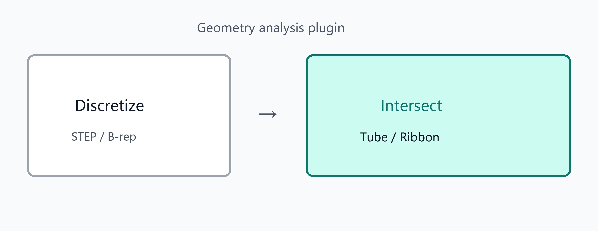

Geometry analysis plugin
Geometry analysis plugin
Discretize STEP or in-scene B-rep/mesh with density controls
Edge–face / face–face intersection with viewport picking
Tube / Ribbon meshes from intersections
CloudSim User Help · Select a chapter from the left TOC